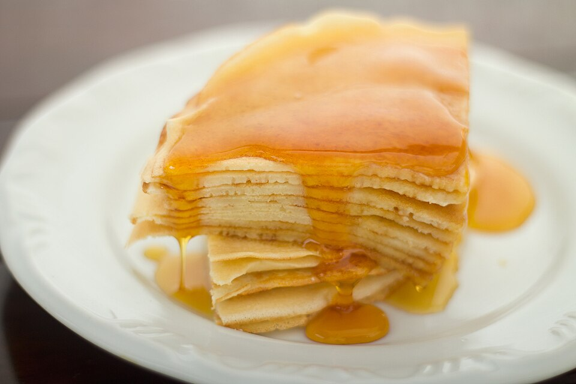

Recept: Pannenkoeken
Pannenkoeken zijn snel en lekker — ideaal voor een luie
zondagmorgen. Met dit basisrecept maak je in een handomdraai een stapel luchtige
pannenkoeken.

Ingrediënten
- 250 g bloem
- 2 eieren
- 500 ml melk
- snufje zout
- boter om in te bakken
Bereidingswijze
- Doe de bloem en het zout in een kom en maak een kuiltje in het midden.
- Breek de eieren in het kuiltje en roer er beetje bij beetje de melk door.
- Roer tot een glad beslag zonder klontjes.
- Verhit een klontje boter in een pan en schep er een soeplepel beslag in.
- Bak de pannenkoek aan beide kanten goudbruin en herhaal met de rest van het beslag.